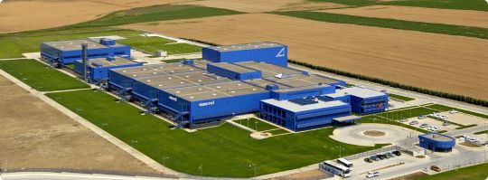

İlaç sektörüne 1976'da Ankara Galenos Ecza Deposu'nu kurarak giren Erol Toksöz, 1983 yılında Sanovel’in temellerini atmıştır. Şirket, kurulduğu günden beri inandığı ve kalpten bağlı olduğu değerlerinden ödün vermeden gelişmiş, her geçen gün deneyim kazanırken yenilenmiş ve çağın gerekliliklerine çevik bir şekilde ayak uydurmuştur. İnsana, çevreye ve tüm çalışanlarına değer vererek üretimin her aşamasına değer katmıştır.
Üretim yolculuğuna Şişli'de 5 kişilik küçük bir ekip ile başlayan Sanovel, tüm gücüyle hedeflerine doğru yol almış ve her geçen gün gücüne güç katarak büyümüştür. Bugün 125 bin metrekare arsa üzerinde, 59 bin metrekare kapalı alana sahiptir. Dünya standartlarındaki modern tesislerinde yenilikçi yöntemlerle üretim yapan Sanovel, ülke sınırlarını aşarak tüm dünyaya açılmakta ve küresel pazardaki yerini almaktadır. Attığı her adımda ülkemiz ilaç sektörünü de ileriye taşımayı hedeflemekte ve ilk günkü heyecanıyla farklı kıtalarda da başarılarıyla adını duyurmayı hedeflemektedir.
Her zaman gelişime, değişime, inovatif fikirlere ve yeniliğe açık olan Sanovel, yüzde yüz yerli sermaye ile kurulmuş ve 30 yılı aşkın süredir sağlıklı yarınlar için hizmet vermektedir. IMS verilerine göre Türk ilaç endüstrisinde; ciro sıralamasında ilk 10 firma arasında yer almaktadır. Yeni başarılarla gurur kaynağımız olmaya devam etmektedir.
Sanovel İlaç Sanayi’nin İstanbul Silivri Çantaköy’de 3 Kasım 2001 tarihinde temeli atılan yeni ilaç üretim tesisi, tüm hatlarıyla Nisan 2006 tarihinde üretime başladı. Yeni tesisin kuruluş amacı, üretim kapasitesini artırmanın yanı sıra uluslararası akreditasyon kurumları tarafından onaylanıp, dış pazarlar için üretim yapabilecek duruma gelmekti. Bu amaçla dünyada başarıyla adımızı duyurmak için üretimine her geçen gün daha da gelişerek devam etmektedir.
Yeni üretim tesisi; ana üretim ünitesi, sefalosporin üretim ünitesi, arıtma ünitesi, Ar-Ge merkezi, yüksek depo ve sosyal tesisten oluşmaktadır. Üretim kapasitesi tek vardiyada 300 milyon kutudur. Türk ilaç sektörünün en büyük 10 şirketinden biri olan Sanovel, ilaçlarını Dünya Sağlık Örgütü'nün güncel “İyi Üretim Uygulamaları” standartlarına sıkı sıkıya bağlı olarak, en ileri teknoloji ile üretmektedir.
Kendi alanında uzman kadrosu, nitelikli iş gücü ve yenilikçi Ar-Ge ekibi ile modern tıbbın ihtiyaçlarına; çevik hamlelerle çözümler üretmektedir. Yerli ve milli duruşuyla Türk İlaç Sanayi’ne yön vermekte, uluslararası pazarda ise adını duyurmaktadır. Ülkemiz ekonomisine, dünyaya ve tüm insanlara fayda sağlayıp sağlıklı yarınlar inşa etmek için var gücüyle çalışmaktadır.